Customizing the Hierarchy Diagram
Source:vignettes/ackwards-visualization.Rmd
ackwards-visualization.Rmdautoplot.ackwards() exposes a large number of arguments
for controlling the appearance of the hierarchy diagram. This vignette
is a visual reference: each section demonstrates one group of arguments
with rendered figures so you can see the effect before writing any
code.
All options shown here are presentation-only — they
do not change which factors were extracted or how the between-level
correlations were computed. Options that change which nodes
appear (drop_pruned, compress_levels) are
specific to the Forbes pruning extension and are covered in
vignette("ackwards-forbes").
Setup
The default diagram for reference:
autoplot(x)
Factors are labeled m{k}f{j} (level k, factor j). Two
edge aesthetics carry the between-level correlations, and each one comes
with its own legend: arrow thickness encodes the
magnitude |r|, and edge color encodes the direction
(blue = positive, red–orange = negative). Level labels on the left count
factors per level.
Primary-parent edges are always positive after sign alignment; a red (negative) edge is therefore a genuine secondary relationship, not an artifact.
Encoding sign and magnitude
You choose which aesthetic carries which piece of information.
sign_by picks the channel for direction and
magnitude_by picks the channel for |r|. No aesthetic is
ever mapped without a matching legend.
sign_by — how direction is shown
sign_by = "color" (the default) uses
color_pos/color_neg. "linetype"
draws positive edges solid and negative edges dashed, freeing color for
a single-hue figure. "both" uses color and
linetype together — negatives get a distinct double-dash so they still
read in greyscale — and merges the two into a single “Direction” legend.
"none" drops sign encoding entirely.
autoplot(x, sign_by = "linetype")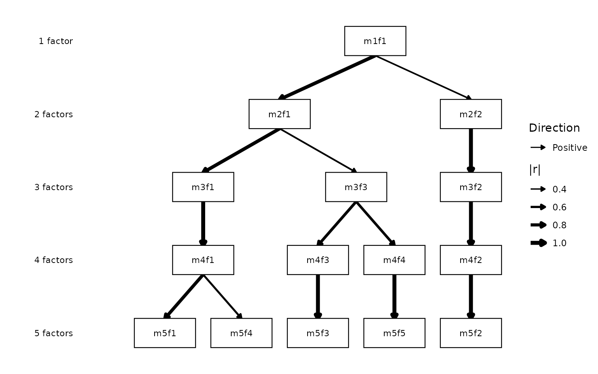
autoplot(x, sign_by = "both")
magnitude_by — how |r| is shown
By default magnitude_by = "linewidth" maps |r| to arrow
thickness with a |r| legend. Set
magnitude_by = "none" for uniform-width edges (see also
edge_linewidth, below, to pin a specific width).
autoplot(x, magnitude_by = "none")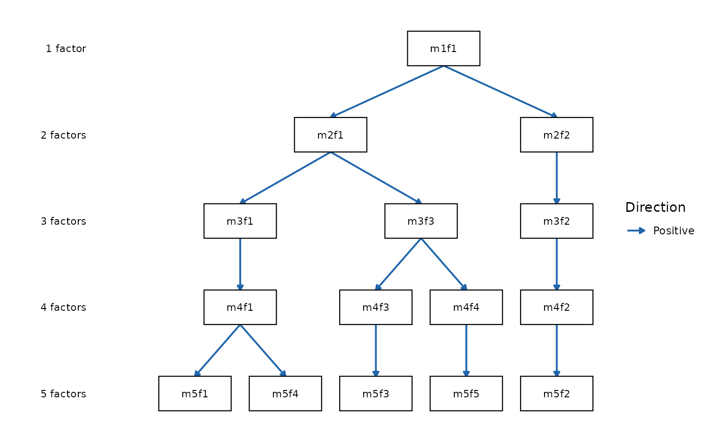
Filtering edges
cut_show — minimum |r| to display
Edges below cut_show are hidden entirely. Raising it
produces a sparser diagram that emphasises only the strongest
connections.
# Default cut_show = 0.3 (already shown above)
autoplot(x, cut_show = 0.5)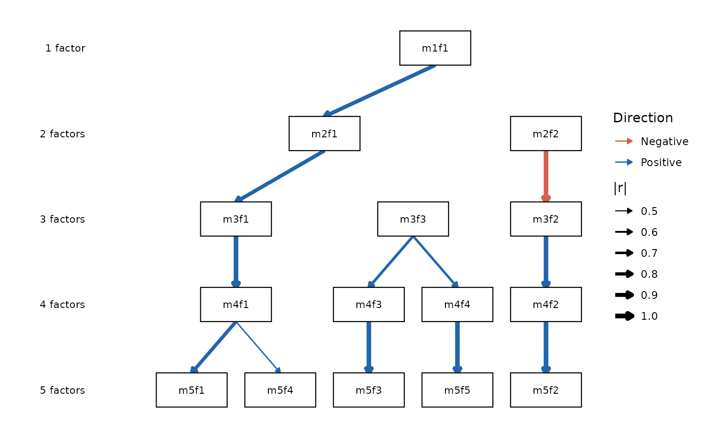
Edge colors
color_pos / color_neg — custom direction
colors
The default blue/red palette can be replaced with any colors
recognised by R. British spellings (colour_pos,
colour_neg) are accepted as aliases.
autoplot(x, color_pos = "darkorchid", color_neg = "darkorange")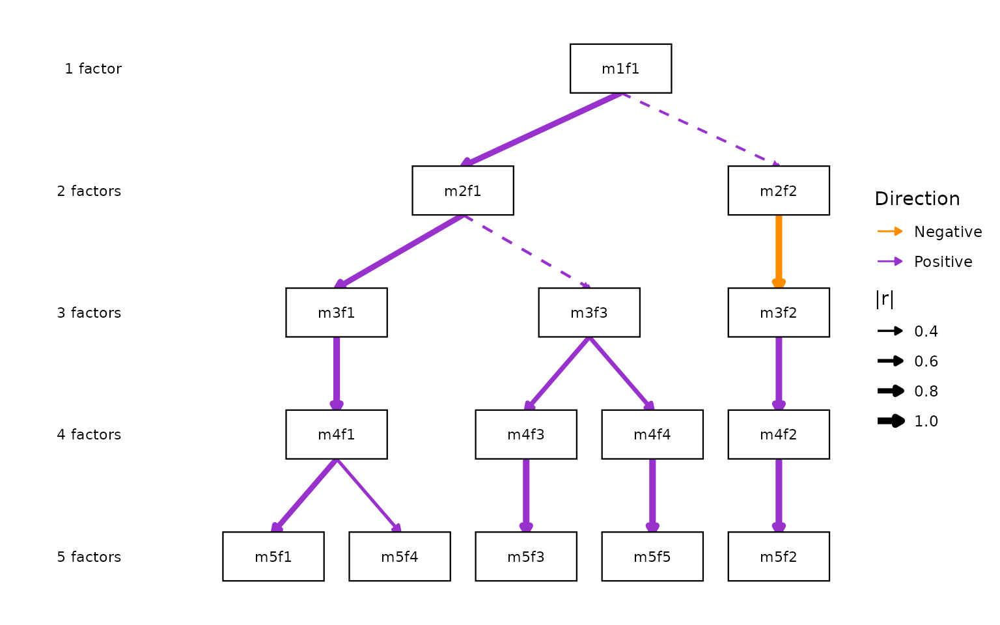
When sign is not encoded by color
(sign_by = "linetype" or "none"), all edges
take the single color_edge (default black) — the basis for
the Forbes (2023) publication style (see the worked example at the end
of this vignette).
Monochrome mode
mono = TRUE — a black-and-white convenience
wrapper
mono = TRUE is shorthand for
sign_by = "linetype" with black edges: solid lines are
positive correlations, dashed lines are negative.
magnitude_by still applies, so linewidth
continues to encode |r|.
autoplot(x, mono = TRUE)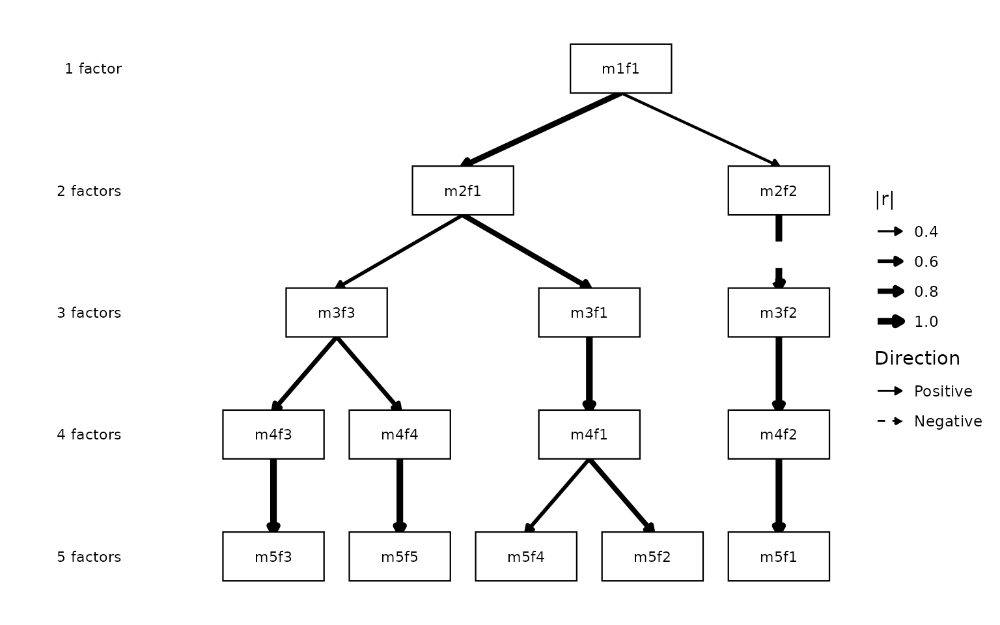
mono suits black-and-white figures where the reader must
distinguish positive from negative edges. To label the edges with their
exact values as well, add show_r = TRUE (documented
next).
Node labels
node_labels — rename individual factors
node_labels is a named character vector mapping factor
IDs to display strings. Unspecified factors keep any name attached with
set_factor_labels(), falling back to their
m{k}f{j} labels. If you have already labelled the object
with set_factor_labels() (see
vignette("ackwards-interpret")), those names appear on the
diagram automatically and node_labels is only needed to
override a particular node for this one plot.
autoplot(x, node_labels = c(
m5f1 = "Neuro.",
m5f2 = "Extra.",
m5f3 = "Consc.",
m5f4 = "Agree.",
m5f5 = "Open."
))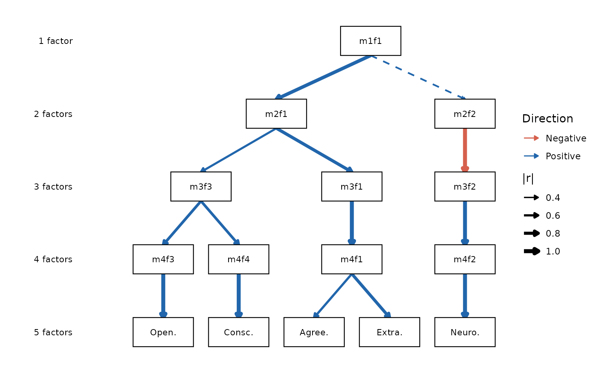
Multi-line labels are supported via \n:
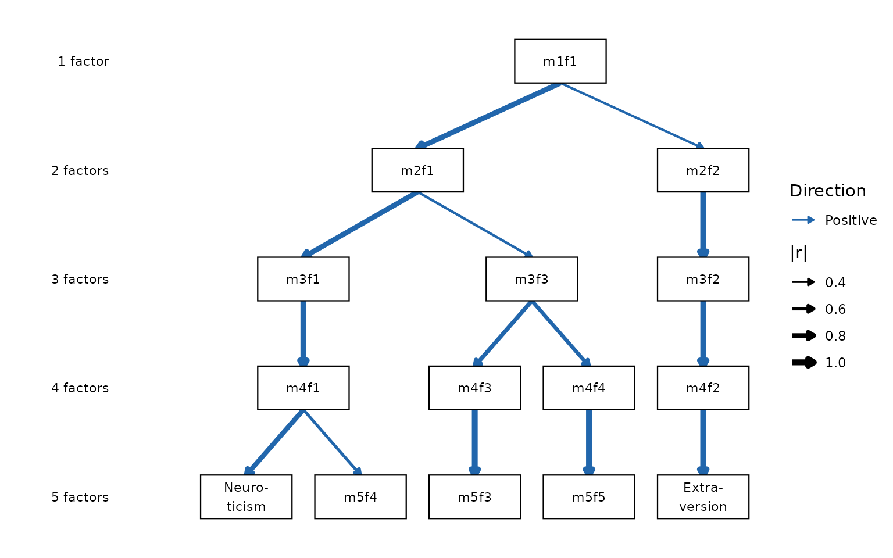
label_template() — generate the scaffold
Typing out every factor ID is tedious for large objects.
label_template() generates the full named vector in
canonical diagram order and prints a copy-pasteable c(...)
literal you can edit and pass back to node_labels. It also
offers the Forbes (2023) letter convention ("A1",
"B1", "B2", …) as a built-in style:
autoplot(x, node_labels = label_template(x, style = "forbes"))
#> `label_template()` scaffold (forbes style):
#> c(
#> "m1f1" = "A1",
#> "m2f1" = "B1",
#> "m2f2" = "B2",
#> "m3f1" = "C1",
#> "m3f2" = "C2",
#> "m3f3" = "C3",
#> "m4f1" = "D1",
#> "m4f2" = "D2",
#> "m4f3" = "D3",
#> "m4f4" = "D4",
#> "m5f1" = "E1",
#> "m5f2" = "E2",
#> "m5f3" = "E3",
#> "m5f4" = "E4",
#> "m5f5" = "E5"
#> )For the full naming workflow — reading factors, the sign convention,
and choosing labels across the hierarchy — see
vignette("ackwards-interpret").
Structural simplifications
primary_only = TRUE — show only primary-parent
edges
Setting primary_only = TRUE keeps only the single
strongest edge per factor (its primary parent), producing a clean tree.
Because skip-level edges are never primary, this also suppresses curved
arcs when pairs = "all" was used.
autoplot(x, primary_only = TRUE)

Arrowheads
show_arrows = FALSE — plain line ends
By default, edges end with closed arrowheads. Setting
show_arrows = FALSE draws plain line ends. This applies to
both straight edges and curved skip-level arcs.
autoplot(x, show_arrows = FALSE)Edge width
edge_linewidth — uniform vs. |r|-scaled width
By default, edge width is proportional to |r| (via
magnitude_by). A numeric edge_linewidth draws
every edge at that constant width and removes the |r|
legend — like magnitude_by = "none", but at a width you
choose.
autoplot(x, edge_linewidth = 0.7)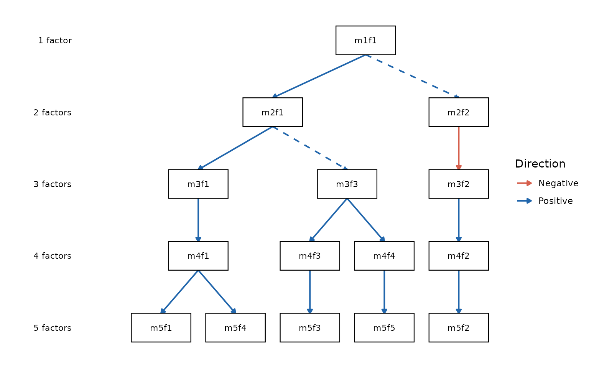
Layout orientation
direction = "horizontal" — left-to-right layout
By default levels stack top-to-bottom (level 1 at top).
direction = "horizontal" lays them out left-to-right (level
1 at left), which fits wide slides and posters; the level labels move to
the bottom margin.
autoplot(x, direction = "horizontal")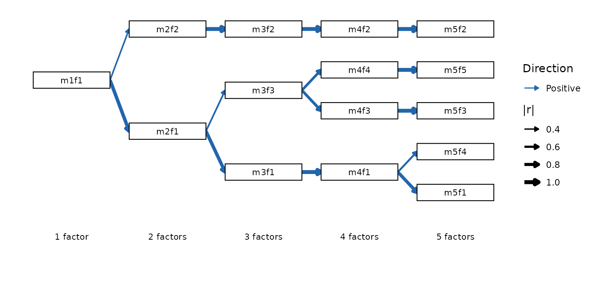
Legend
legend = FALSE — suppress all guides
legend = FALSE removes all legends from the plot. Most
useful when the diagram is self-explanatory or the legend duplicates
information conveyed by labels.
autoplot(x, legend = FALSE)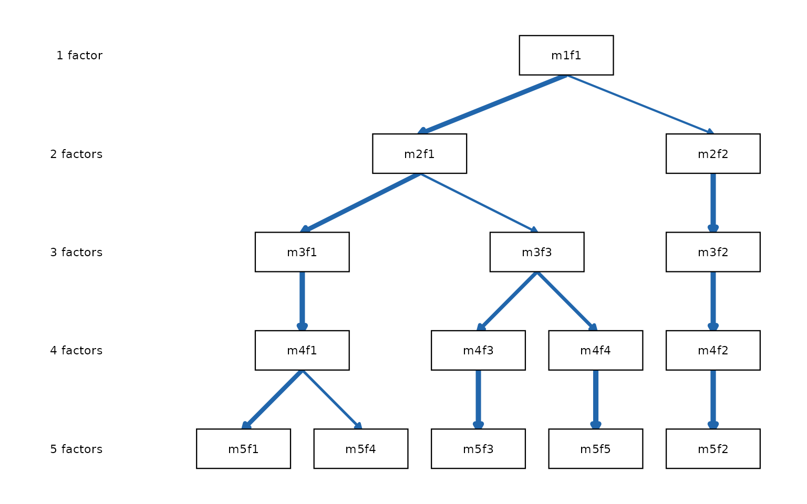
Worked example: publication-ready figure
The following call reproduces the visual style of Forbes (2023):
black lines of uniform weight, plain line ends, correlation labels, and
no legend. Setting both direction colors to black yields a single-hue
figure, and legend = FALSE suppresses the now-redundant
key.
autoplot(x,
color_pos = "black",
color_neg = "black",
edge_linewidth = 0.6,
show_arrows = FALSE,
show_r = TRUE,
legend = FALSE
)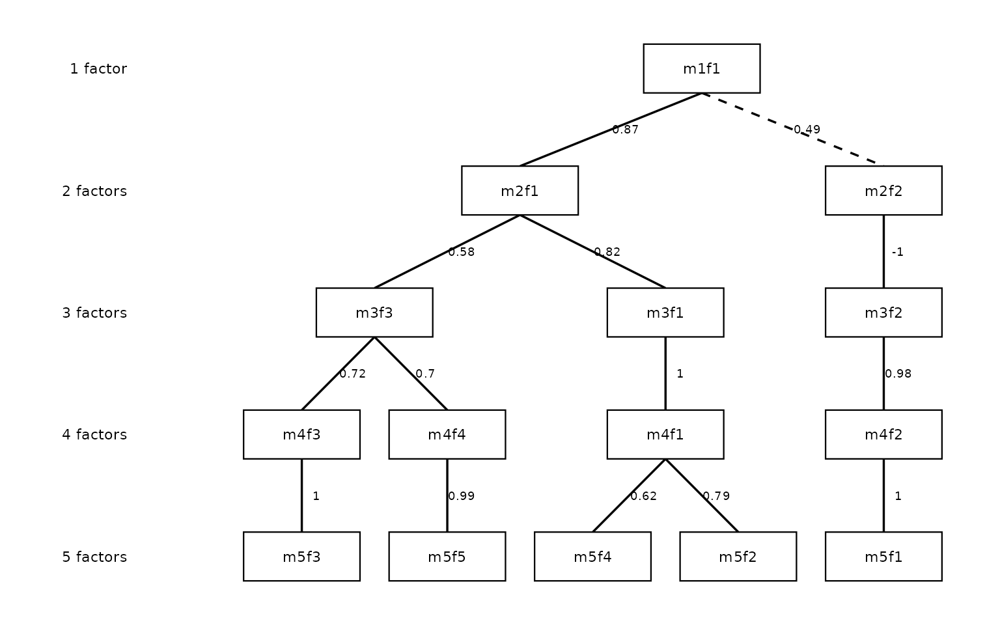
Combining with node_labels names the factors for the
final figure:
autoplot(x,
color_pos = "black",
color_neg = "black",
edge_linewidth = 0.6,
show_arrows = FALSE,
show_r = TRUE,
legend = FALSE,
node_labels = c(
m5f1 = "Neuro.",
m5f2 = "Extra.",
m5f3 = "Consc.",
m5f4 = "Agree.",
m5f5 = "Open."
)
)For the pruned-factor variant of this figure (nodes omitted, spanning
arrows) see vignette("ackwards-forbes").
Saving plots
autoplot() returns an ordinary ggplot
object, so save it with ggplot2::ggsave():
p <- autoplot(x, direction = "horizontal")
ggplot2::ggsave("hierarchy.png", p, width = 9, height = 5, dpi = 300)ackwards does not re-export ggsave() — that
would move ggplot2 from Suggests into Imports — so call it
from ggplot2 directly.
Diagnostic scree / criteria plot:
autoplot.suggest_k()
suggest_k() also has its own autoplot()
method, producing a multi-panel scree / parallel-analysis / VSS
diagnostic. It is documented in depth in
vignette("ackwards-suggest-k"); here we only note that the
same autoplot() generic covers it.
sk <- suggest_k(bfi, seed = 42)
#> ℹ Running parallel analysis (20 iterations, PC + FA)...
#> ✔ Running parallel analysis (20 iterations, PC + FA)... [254ms]
#>
#> ℹ Running MAP and VSS...
#> ✔ Running MAP and VSS... [177ms]
#>
#> ℹ Running Comparison Data (CD)...
#> ✔ Running Comparison Data (CD)... [10.6s]
#>
autoplot(sk)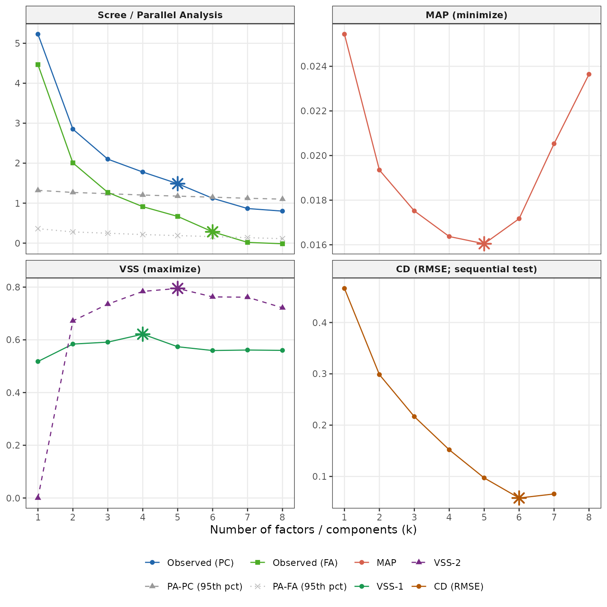
References
Forbes, M. K. (2023). Improving hierarchical models of individual differences: An extension of Goldberg’s bass-ackward method. Psychological Methods. https://doi.org/10.1037/met0000546